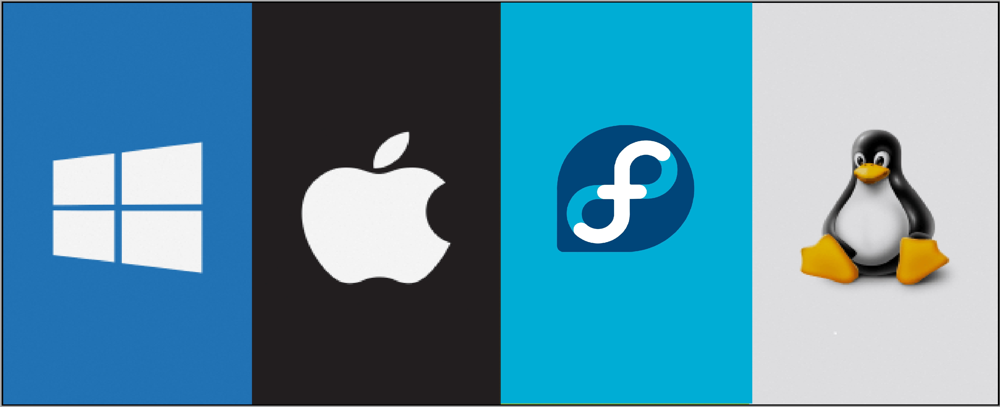

Meilleurs systèmes d'exploitation (PCs)
C'est quoi un systeme d'exploitation ?
programmes chargé d'établir une relation entre les différentes ressources matérielles, les
applications et l'utilisateur. Dans un ordinateur, le système d'exploitation a plusieurs missions.
A quoi sert un systeme d'exploitation ?
Roles d'un OS:
textes, images, vidéos, films; dans des fichiers préparés par l'utilisateur ou chargés depuis
des supports externes ou via le réseau.

Quel système d'exploitation est le meilleur pour un usage personnel ?
d'excellentes options. À la maison, vous n'avez pas besoin d'un système d'exploitation
puissant, en particulier pour des tâches simples comme l'écriture ou la navigation sur le Web.
Pour les jeux, le système d'exploitation Windows est bien optimisé que celui de MAC.
Quel est le système d'exploitation le plus rapide ?
Fedora est une excellente option, en particulier pour la gestion d'entreprises commerciales
où une puissance de calcul importante est obligatoire.
Alternatives gratuites du systèmes d'exploitation
d'exploitation de haute qualité pour leurs ordinateurs. Cependant, ce ne sont pas toutes les
mauvaises nouvelles car il existe des systèmes d'exploitation gratuits alternatives qui garantissent
que votre ordinateur continue de fonctionner. Toutes les options ci-dessous sont disponible
en téléchargement, vous pouvez donc simplement l'installer aujourd'hui.
- Linux: Linux est absolument gratuit et fonctionnera littéralement sur n'importe quoi.
- Chrome OS: Chrome OS est disponible sur un certain nombre d'ordinateurs portables
à bas prix et certains ordinateurs portables haut de gamme, comme les livres Chrome. - Free BSD: Avec ses racines connectées à Linux, il s'agit de la version moderne de Berkeley
Software Distribution. - Syllable: Syllable est une autre alternative gratuite réservée aux particuliers et aux
petites entreprises. - ReactOS: Initialement lancé en tant que clone de Windows 95, ce système d'exploitation
a parcouru un long chemin depuis lors.
| Nom du OS | Architecture | Best For | Price | Website |
|---|---|---|---|---|
| Windows | X86 - X64, Power PC | Apps, Gaming, Navigation | Premium | Windows |
| Mac OS | 68k, Power PC | Applications Apple Exclusive | Gratuit | Mac OS |
| Ubuntu | X86, X86-64, Power PC, | Téléchargement Open Source, APPS | Gratuit | Ubuntu |
| Fedora | X86-64, Power PC, | Téléchargement Open Source, APPS | Gratuit | Fedora |